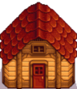
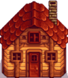

Shed
| Shed | Big Shed | ||
|  |  | ||
|---|---|---|---|
| Information | |||
| Description | An empty building. Fill it with whatever you like! The interior can be decorated. | Doubles the size of the shed. The interior can be decorated. | |
| Upgrades From | N/A | Shed | |
| Building Cost | |||
| Building Materials | |||
| Footprint | 7x3 |
7x3 | |
The Shed is a type of farm building purchasable from Robin at the Carpenter's Shop. A shed can also be upgraded to a Big Shed at the Carpenter's Shop. To upgrade this building fully it would cost  35,000g. If purchasing the materials, it would cost
35,000g. If purchasing the materials, it would cost  49,500g during year 1 or
49,500g during year 1 or  107,500g during year 2+.
107,500g during year 2+.
Behavior
Sheds act like small farmhouses, allowing players a room inside to decorate however they'd like with furniture, wallpaper, and flooring. The exterior is 7x3, smaller than its unupgraded 11x9 interior. The interior of the upgraded Big Shed is 17x12. This allows the player to effectively redistribute space on the farm.
Interior
The initial interior of the shed is bare. The interior dimensions of the shed are 11x9, which is approximately the same size as the player's starting farmhouse. The Big Shed has dimensions of 17x12, providing slightly more than twice the area of the starting shed.
Note that the "optimal layout" images below apply to mouse/keyboard. Equipment in the corners usually cannot be reached when using a controller or mobile device.

The interior of a Shed.

The interior of a Big Shed.

The optimal Shed layout provides 67 spaces

The optimal Big Shed layout provides 137 spaces

The optimal Big Shed layout provides 167 spaces for Garden Pots harvestable by Iridium Scythe. Lights may be placed in the remaining inaccessible spaces.
Notes
The optimal layout of an unupgraded shed provides 67 spaces, but sheds are not the only farm buildings that can be used purely for storage. A Barn provides 90 spaces, and a Deluxe Barn provides 136 spaces. Coops and Cabins can also be used purely for storage. Cabins provide 42 spaces when unclaimed, 113 spaces after a single upgrade, and 351 spaces after two upgrades.
History
| Buildings | ||
|---|---|---|
| Merchants | Abandoned House • Adventurer's Guild • Blacksmith • Bookseller • Carpenter's Shop • Casino • Desert Trader • Fish Shop • Giant Stump • Harvey's Clinic • Ice Cream Stand • Island Trader • JojaMart • Marnie's Ranch • Oasis • Pierre's General Store • Qi's Walnut Room • The Stardrop Saloon • Traveling Cart • Volcano Dwarf • Wizard's Tower | |
| Houses | 1 River Road • 2 River Road • 1 Willow Lane • 2 Willow Lane • 24 Mountain Road • Elliott's Cabin • Farmhouse • Island Farmhouse • Leah's Cottage • Mayor's Manor • Tent • Trailer • Treehouse | |
| Farm Buildings | Farming | Barn • Cabin • Coop • Fish Pond • Greenhouse • Mill • Pet Bowl • Shed • Silo • Slime Hutch • Stable • Well |
| Special | Desert Obelisk • Earth Obelisk • Farm Obelisk • Gold Clock • Island Obelisk • Junimo Hut • Water Obelisk | |
| Other Buildings | Community Center • Dog Pen • Island Field Office • Joja Warehouse • Movie Theater • Museum • Spa • Witch's Hut | |